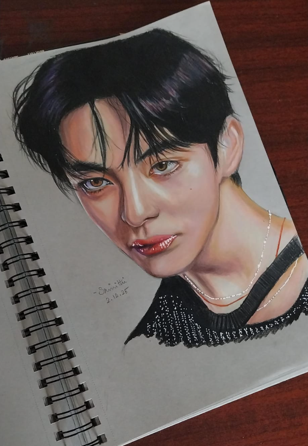

The artist behind ArtVerse

Art has always been a way for me to express myself, observe the world around me and turn ideas into something visual.
I especially enjoy creating realistic portraits using graphite and colored pencils. I love paying attention to small details such as eyes, hair, expressions and textures.
ArtVerse is a space where I can showcase my artwork, share the things I learn and collect useful resources for other artists.
The things that make drawing exciting for me.
I enjoy using graphite to create detailed sketches, realistic shading and portraits.
Layering and blending colored pencils allows me to create realistic colors and textures.
I love focusing on tiny details, especially eyes and facial expressions.
Every artwork is another opportunity to learn something new.
Create something new
Improve my techniques
Keep experimenting